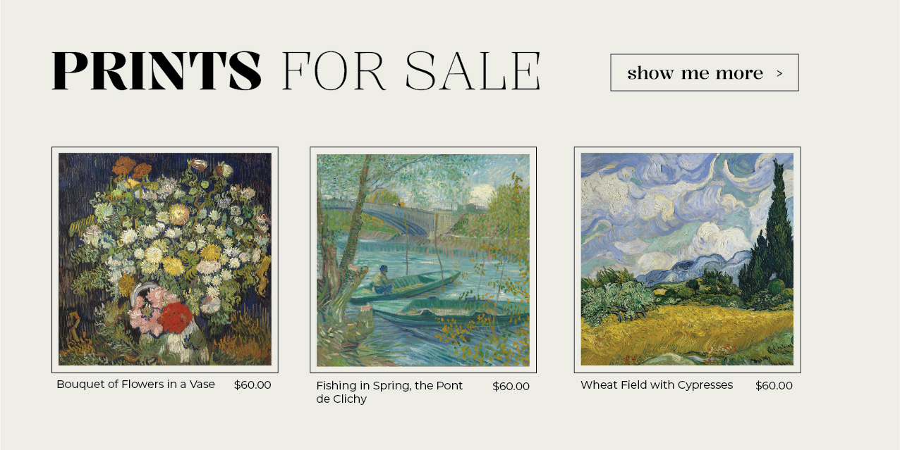

UX/UI Design & Full-Stack Web Development
Artist Portfolio Site
This is a passion project meant to act as a sample of my work. It is a homepage demo of an artist portfolio website for the late Vincent van Gogh. Because of the copyright status of his work, I was able to have fun creating in lieu of legal agreements.
Objectives:
- Implement a fully-responsive and creative home for his work
- Provide a simple UI that promotes transactions and user retention
- Keep users engaged with unique displays and interactivity
*As the live site is a homepage demo, please be aware that all links are placeholders.
Ideation &
Wireframing
The key focus for the UX design was simplicity and user engagement. I wanted to make sure users could quickly explore the menu and find what they were looking for, or slowly peruse the homepage visuals and be gently led to more.
Necessities:
- display work
- sell prints
- display upcoming event info
- display artist portrait & description
Style
I wanted the style of the website to reflect the nature of Van Gogh's work. I pulled colors and motion from his paintings to incorporate into the typography and theme of the site. I focused particularly on Wheat Field With Cypresses because I believed this painting to be representative of his work in terms of color and brush stroke. I also picked a background color reminiscent of archival canvas.

Prototyping, Development, & Interactivity
As someone known for his quirks, I believe Van Gogh would have wanted some unique features on his personal website. I added hover states, scroll responsiveness, and am working on an off-putting eye-mouse-track in his portrait to retain user attention. The site is spacious and simple and allows these features to pop while maintaining ease and intuiutiveness.